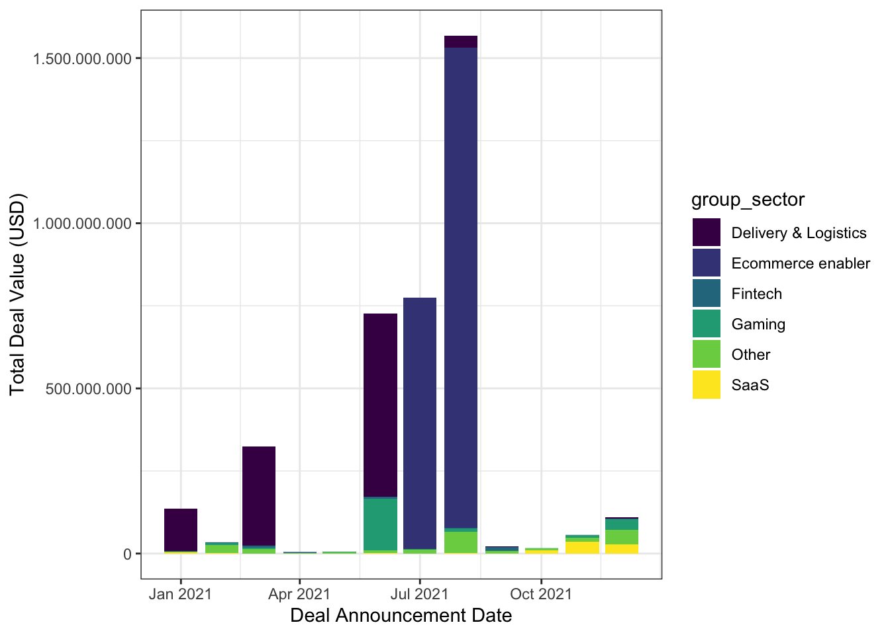

library(readxl)
library(dplyr)
library(lubridate)
library(ggplot2)
library(tidyr)
library(scales)
library(knitr)
library(viridis)
library(maps)1 Assignment 1
Our dataset is a list of startups getting investments from a variety of domestic and international investors. Data is gathered from KPMG and 212’s Turkish Startup Investments Review 2021 report.
1.1 Key Takeaways
Top 5 sectors that are invested most in terms of total value are Ecommerce enabler, Delivery and Logistics, Gaming, SaaS and Fintech respectively.
Most of the investment deals are sealed during period from June 2021 to August 2021
Regarding the distribution of investments made to the target companies, first 4 startups, namely Trendyol, Getir, Hepsiburada and Dream Games, attracted a total of 3.4 billion USD approximately and accounted for 89.2% of all investments made in 2021.
The share of local investors, with a total investment value of 273 million USD, is limited and majority of the investments are made by foreign investors with a total value of 3.5 billion USD.
Most of the investors by far the most are from Turkey in terms of number of deals, where as United States, UAE and Qatar are leading countries of investors in terms of value invested in startups.
1.2 Data Wrangling and Exploratory Data Analysis
Download necessary libraries
1.2.1 Data Preparation
Necessary data manipulation operations are made to prepare raw data for further analysis.
#read data
startup <- read_excel("startup_deals_2021.xlsx")
# Convert spaces to underscore in column names
colnames(startup) <- startup %>%
colnames() %>%
gsub(" ", "_", .)
# Convert data type of numeric columns from string to numeric
startup$`Deal_Value_(USD)` <- as.numeric(startup$`Deal_Value_(USD)`)
# Convert percentages to numeric format
startup$`Stake_(%)` <- startup$`Stake_(%)` %>%
gsub("\\..*", "", .) %>%
gsub("%", "", .) %>%
as.numeric()
# Convert string date to date format
startup$Announcement_Date <- startup$Announcement_Date %>%
paste("01", ., sep = "") %>%
parse_date_time(., "dmy")
# New columns for months and years
startup$year <- year(startup$Announcement_Date)
startup$month <- month(startup$Announcement_Date)
str(startup)1.2.2 Determining Top 5 Sectors in terms of Total Value of Investments
Table below shows the top 5 sectors of startups that are invested most in total value in 2021.
top_5_sector_table <- startup %>%
group_by(Sector) %>%
summarize(total_value = sum(`Deal_Value_(USD)`, na.rm = TRUE)) %>%
arrange(desc(total_value)) %>%
top_n(n = 5)Selecting by total_valuekable(top_5_sector_table)| Sector | total_value |
|---|---|
| Ecommerce enabler | 2218940063 |
| Delivery & Logistics | 1027811561 |
| Gaming | 221235284 |
| SaaS | 84053230 |
| Fintech | 28894578 |
1.2.3 Visualising Monthly Sectoral Investments to Startups in 2021
Sectors are grouped as top 5 sectors and the remaining sectors are labeled as “Others”. As can be seen from the bar plot of monthly distribution of value of total investments, highest value of deals are sealed and announced during summer in 2021.
# Obtaining top 5 sectors found in previous code as a vector.
top_5_sector <- top_5_sector_table %>%
select(Sector) %>%
pull()
# Create a new variable that classify sectors other than top_5 as others
startup <- startup %>%
mutate(group_sector = case_when(Sector %in% top_5_sector ~ Sector,!(Sector %in% top_5_sector) ~ "Other"))
# Plotting monthly investment values of top_5_sectors and others
startup %>%
group_by(Announcement_Date, group_sector) %>%
summarise(value = sum(`Deal_Value_(USD)`, na.rm = TRUE)) %>%
ggplot(aes(x = Announcement_Date, y = value, fill = group_sector)) +
geom_col() +
scale_y_continuous(labels = comma_format(big.mark = ".",
decimal.mark = ",")) +
labs(x = "Deal Announcement Date", y = "Total Deal Value (USD)") +
scale_fill_viridis(discrete=TRUE) +
theme_bw()`summarise()` has grouped output by 'Announcement_Date'. You can override using
the `.groups` argument.
1.2.4 Distribution of Investments Across Target Companies.
The deals accomplished in 2021 is concentrated on a few startups. 4 highest valued deals sum up to almost 90% of total value of all deals in 2021.
# Obtain percentages of Target_companies in terms of value invested in 2021
# Classify companies as first 4 companies and others
startup_percent <- startup %>%
group_by(Target_Company) %>%
summarize(Total_Deal_Value = sum(`Deal_Value_(USD)`, na.rm = TRUE)) %>%
mutate(percent = Total_Deal_Value / sum(Total_Deal_Value) * 100) %>%
arrange(desc(percent)) %>%
mutate(group_company = case_when(Target_Company %in% Target_Company[1:4] ~ Target_Company, !(Target_Company %in% Target_Company[1:4])~"others"))
startup_percent[1:4,] %>%
summarize(Total_Value = sum(Total_Deal_Value), percentage = sum(percent))# A tibble: 1 × 2
Total_Value percentage
<dbl> <dbl>
1 3369481050 89.2# Draw a column chart according to group framework given above
startup_percent_group <- startup_percent %>%
group_by(group_company) %>%
summarize(group_percent = sum(percent, na.rm = TRUE)) %>%
arrange(desc(group_percent)) %>%
mutate(cum_percentage = cumsum(group_percent))
kable(startup_percent_group)| group_company | group_percent | cum_percentage |
|---|---|---|
| trendyol | 37.975496 | 37.97550 |
| Getir | 26.940108 | 64.91560 |
| hepsiburada | 20.151651 | 85.06726 |
| others | 10.830861 | 95.89812 |
| Dream Games | 4.101884 | 100.00000 |
startup_percent_group %>%
arrange(group_percent) %>%
mutate(group_company = factor(group_company, group_company)) %>%
ggplot(aes(x = group_company, y = group_percent)) +
geom_col(fill = "#69b3a2") +
labs(x = "Target Company", y = "Percentage (%)", title = "Distribution of Startup Investments among Target Companies in 2021") +
theme_bw()
1.2.5 Categorizing Investors as Locals and Foreigners
Equal partnership in investments is assumed if number of investors is higher than one in a particular deal.
# Generate Unique id for each transaction and calculate number of investors as a new column "count"
id_count <- startup %>%
mutate(id = 1:dim(startup)[1]) %>%
separate_rows(`Investor's_Origin`, sep = ", ") %>%
group_by(id) %>%
summarize(id_count = n()) %>%
pull(id_count)
# Add id_count to startup
startup_country <- startup %>%
mutate(id_count) %>%
separate_rows(`Investor's_Origin`, sep = ", ") %>%
mutate(new_value = `Deal_Value_(USD)` / id_count) %>%
mutate(country_name = gsub(pattern = "\r\n", replacement = "", x = .$`Investor's_Origin`)) %>%
filter(country_name != "NA")
# Categorizing investors as foreign and local
# Type of investors (local/foreign) as two subgroups is obtained and used for monthly investment deals.
local_foreign <- startup_country %>%
group_by(Announcement_Date) %>%
summarize(local = sum(new_value[country_name == "Turkey"], na.rm = TRUE), foreign = sum(new_value[country_name != "Turkey"], na.rm = TRUE))
local_foreign %>%
pivot_longer(cols = c(local, foreign),names_to = "type", values_to = "deal_value") %>%
group_by(type) %>%
summarize(Sum = sum(deal_value)) %>%
print()# A tibble: 2 × 2
type Sum
<chr> <dbl>
1 foreign 3470365902.
2 local 273386559.local_foreign %>%
pivot_longer(cols = c(local, foreign),names_to = "type", values_to = "deal_value") %>%
ggplot(aes(x = type, y = deal_value)) +
geom_col(stat="identity", fill="#69b3a2") +
scale_y_continuous(labels = comma_format(big.mark = ".",
decimal.mark = ",")) +
labs(x = "Investor Type", y = "Total Value of Deals", title = "Domestic vs. Foreign Investment") +
theme_bw()
1.2.6 Analysing Country Profile of Investors
Although number of deals accomplished by local investors is higher than foreigners, total value of transactions completed by foreign investors is 12 times higher than locals.
startup_country_graph <- startup_country %>%
group_by(country_name) %>%
summarise(country_total = sum(new_value, na.rm = TRUE), country_number = n()) %>%
arrange(desc(country_total)) %>%
print()# A tibble: 22 × 3
country_name country_total country_number
<chr> <dbl> <int>
1 USA 1851560871 25
2 UAE 642850000 4
3 Qatar 359695000 4
4 Japan 358750000 1
5 Turkey 273386559. 254
6 UK 137790314. 13
7 Brazil 42666667. 1
8 France 32000000 2
9 Finland 10000000 1
10 Germany 7635684. 4
# … with 12 more rowsstartup_country_graph$country_name[startup_country_graph$country_name == "UAE"] = "United Arab Emirates"
# Graph investment deals and number of transactions of highest 10 countries in 2021
startup_country_graph %>%
arrange(country_total) %>%
mutate(Country=factor(country_name, country_name)) %>%
top_n(n = 10, wt = country_total) %>%
ggplot(aes(x = Country, y = country_total)) +
geom_col(stat = "identity", fill="#69b3a2") +
coord_flip() +
scale_y_continuous(labels = comma_format(big.mark = ".",
decimal.mark = ",")) +
labs(y = "Total Value of Deals", title = "Value of Startup Deals in 2021 (per Investor's Origin Country)") +
theme_bw()startup_country_graph %>%
arrange(country_number) %>%
mutate(Country=factor(country_name, country_name)) %>%
top_n(n = 10, wt = country_number) %>%
ggplot(aes(x = Country, y = country_number)) +
geom_col(stat="identity", fill="#69b3a2") +
coord_flip() +
labs(y = "Number of Deals", title = "Number of Startup Deals in 2021 (per Investor's Origin Country)") +
theme_bw()
## Alternative way to demonstrate geographic variation of investments into startups
world_map <- map_data("world")
world_map <- subset(world_map, region != "Antarctica")
# World heat map plot
ggplot(startup_country_graph) +
geom_map(
dat = world_map, map = world_map, aes(map_id = region),
fill = "white", color = "#7f7f7f", size = 0.25
) +
geom_map(map = world_map, aes(map_id = country_name, fill = country_total/1e6), size = 0.25) +
scale_fill_gradient(low = "#56B1F7", high = "#132B43", name = "Investments\n(Million USD)") +
expand_limits(x = world_map$long, y = world_map$lat) + labs(title = "Geographic Distribution of Startup Investments in 2021") +
theme(axis.text = element_blank(), axis.title = element_blank(), axis.ticks = element_blank())